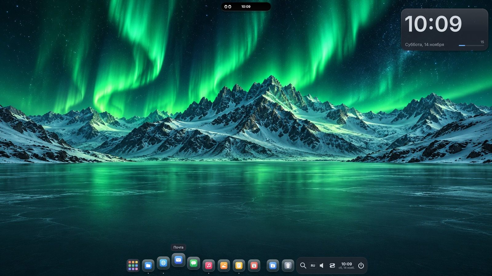
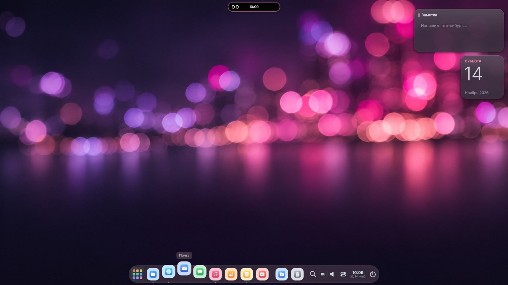
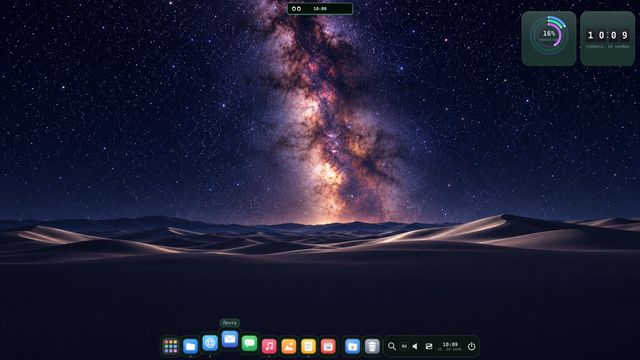
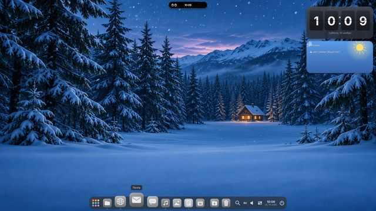
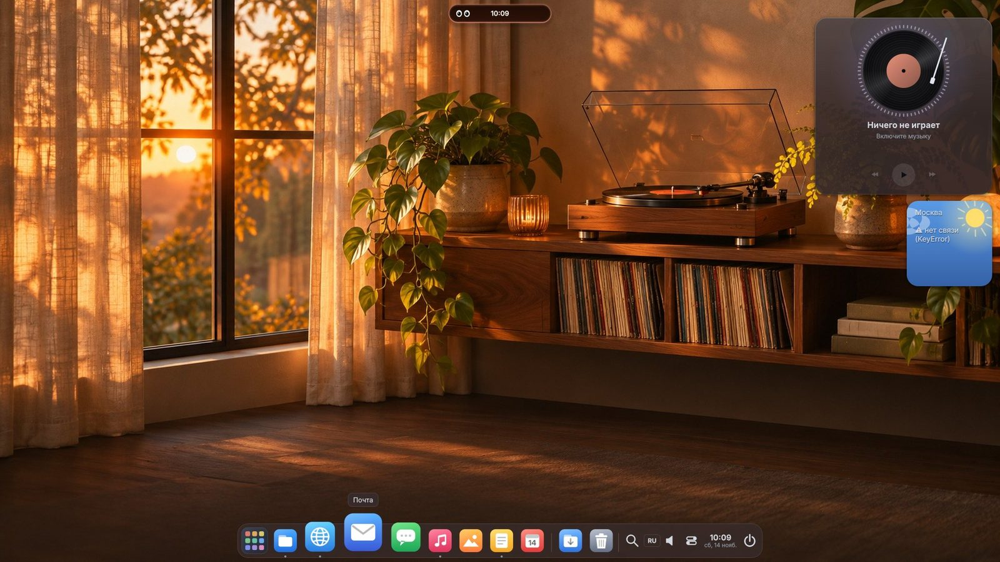

Make Windows yours
Dock turns a plain desktop into a beautiful and handy one: an app dock on any screen edge, a live Island on top, live wallpapers, widgets and ready-made looks — all changed in a single click.
⬇ Download for free





Designer looks
Wallpaper, color, dock shape, icons, the Island and widgets change at once. Not your style? “Surprise me” builds a random look.






Anywhere you want, any way you want

Dock on any edge
Bottom, top, left or right — just hold Alt and drag. Need more room? Turn on a second dock for games or work.

Edit desktop
Move widgets, the dock and the Island right with the mouse, add stickers, GIFs and labels in any font.

The Island on top
A living pill: music with cover art and lyrics, notifications, reminders, a timer, files from your phone over Wi-Fi.

34 widgets
Clock, weather, vinyl, calendar, calculator, moon, world time. Any size, frosted glass, ready-made sets.

Live wallpapers
Video, GIFs and live scenes. Wallpaper follows your mouse, glows to the music — and if it snows outside, it snows on your desktop too.

Never get lost
“What Dock can do” lists every feature with a “Show” button, and a daily tip suggests something new.
Community looks
Desktops built by Dock users. Copy a code and paste it in Dock: Looks → “Paste code…”.
FAQ
Is it free?
Yes. Everything on this page is free.
Is it safe?
Dock doesn't track you and has no ads. Every update is signed: Dock won't install a file if the signature doesn't match. Details are in the privacy policy.
Will it slow my PC down?
No: Dock uses about 150 MB of memory and under 1% CPU, and live wallpapers pause when hidden or while you play.
What about the Windows taskbar?
You choose on first launch: keep it, auto-hide it or hide it completely.
How do I go back?
Uninstall Dock in Settings → Apps. Your taskbar, wallpaper and desktop icons come back.
Where can I ask a question?
Message our Telegram bot — the author replies. Or in Dock: “Report a problem”.